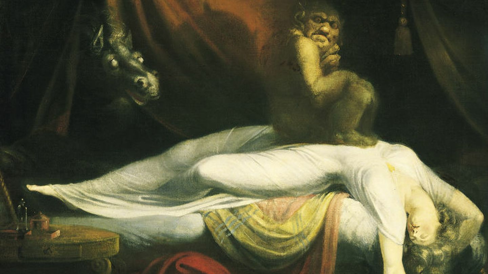

Era la madrugada, y no dormía. Estaba cansado, eso sí, pero no había podido conciliar el sueño. Llevaba intentándolo largo rato, dando vueltas en la cama, buscando una posición que facilitara su descanso. Todo era infructuoso. Dormitaba. De vez en cuando caía en un estado de sopor, para luego salir de él dando un respingo. Tenía el cuerpo tenso, especialmente el cuello.
Sentía una fuerza opresora sobre el pecho, con algún que otro pinchazo en el corazón. No lograba dejar de prestar atención a cada uno de sus signos vitales; latidos, respiración...Inhalar y exhalar aire por la nariz, con la boca cerrada, lo sumía en ese estado de sopor, de ensueño. Pero allí su mente creaba visiones muy raras: serpientes, luces, figuras fantasmagóricas...
Al regresar al estado consciente, encendía la luz del velador junto a la cama, cuyo interruptor tenía al alcance de su mano. Entonces, su mente, en pocos segundos,
recuperaba la cordura perdida en el breve lapso que había pasado en lo profundo de ese abismo nocturno.
Tras ese segmento temporal de zozobra, a veces apagaba el velador, dejando nuevamente el dormitorio a oscuras. En otras ocasiones, se levantaba de la cama e iba a beber un vaso de agua. Atravesaba descalzo el pasillo y el comedor, y ya en la cocina abría la heladera desde la cual la luz interna de la misma se proyectaba sobre las paredes y el mobiliario del ambiente. Él, sensibilizado como estaba, era invadido por un absurdo temor generado por una supuesta e improbable presencia extraña en el lugar. Se dejaba caer sobre una silla e, inerte, fijaba la vista en el sitio donde supuestamente había visto esa aparición, buscando constatar que allí no hubiera nada; y, en efecto, no lo había. Luego, superado el incidente, regresaba a la cama y retomaba el intento de dormirse.
Algunas de esas noches, tenía sueños alucinógenos en los que se encontraba a un perro, o algo parecido, para hablar con mas propiedad. Era un can negro, pequeño, y poseía un solo ojo. Sí, uno solo. Le ladraba y gruñía con furia. Exhibía su dentadura en modo desafiante, y él no lograba escapar. Enviaba desde su cerebro la orden de abandonar la escena y ponerse a salvo, pero sus piernas, agarrotadas, no le respondían.
Por lo tanto, quedaba siempre a su alcance, presa de ese engendro dueño de una mandíbula provista de filosos colmillos que, con un único mordisco, sería capaz de desgarrarle la carne en jirones. Encima, ese ojo, negro en la pupila y amarillo en la cornea, lo observaba. Era como si el órgano visual del perro tuviera la facultad de hipnotizarlo y paralizarlo, dejándolo despojado de toda capacidad de reacción.
Permanecía a merced de ese animal hasta que, ya sin ninguna chance de sobrevivir a su inminente ataque, despertaba dando un estertoroso salto, como emergiendo desde una profundidad que no pertenecía a este mundo; un inframundo vedado a la mayoría de los mortales y del cual él, por razón nefasta y desconocida, poseía la clave de acceso gravada en su subconsciente. El susto le duraba unos minutos.
Para calmarse encendía la luz una vez más y pensaba acerca de la simbología onírica, en la posibilidad de que esa pesadilla fuera portadora de un mensaje; que fuera una advertencia.
A la mañana, despertaba cansado, sin haber descansado lo necesario. Pese a ello, iba a su trabajo sin problemas. Una vez que se alejaba de la casa, ya nada lo perturbaba. Su día transcurría con total normalidad. Al regresar al hogar, con la noche cubriendo la ciudad, se activaba el efecto que lo atormentaba sin darle un respiro. na de esas noches, probó recitar los salmos bíblicos y logró que los cristales de la ventana temblaran peculiarmente. Esto lo condujo a argüir que esos fenómenos paranormales eran producidos por alguna fuerza demoníaca. Fue entonces que relacionó lo que estaba sucediendo con el templo umbanda con el que compartía la medianera. La Biblia era muy clara al condenar la idolatría desde su primer mandamiento: “No tendrás otro dios, porque Yo soy tu único Dios”.
Buscó un bidón de nafta en la cochera, ese que guardaba por las dudas, y roció una parte del templo vecino con su contenido, después encendió un fósforo y lo lanzó sobre el combustible; todo comenzó a arder. Los bomberos llegaron cuando ya se había consumido más de la mitad de la edificación.
A él se lo llevó detenido la policía sin que opusiera ninguna resistencia. Estaba seguro de haber hecho lo correcto, y confiaba en que Dios intervendría a favor de su pronto sobreseimiento.